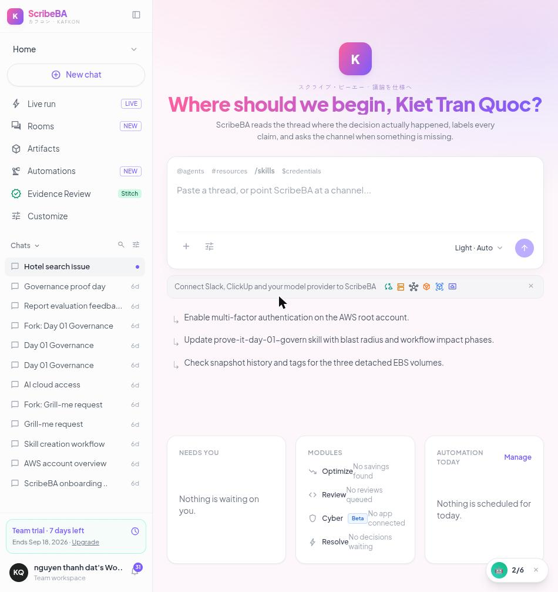

KAFKON
ScribeBA
The Business Analyst that lives in your Slack thread.
スクライブ・ビーエー · 議論を仕様へ
AI Tinkerers Da Nang · Agents, Everywhere · 12 September 2026
The problem
Requirements are not written in Jira. They are argued in Slack.
A security lead sets a constraint
“restrict authentication strictly to @acmecorp.com”
A DBA commits to a migration
sso_provider and external_sub_id, unique, zero-downtime
Someone asks about session expiry
Asked twice. Answered by nobody.
Then a ticket is written from memory
and the constraints that were agreed never make it in
A chatbox cannot fix this. It has to be handed a transcript, stripped of who holds which role.
The loop
Detect · Analyze · Resolve · Validate
Mention it in the thread
Reads the whole argument, labels every claim
Asks the channel instead of guessing
Files the ClickUp ticket with provenance
Every claim carries its status
A field nobody answered becomes Blocked. It is never invented.
Architecture · drag to pan, scroll to zoom, click a node to trace it
The product
ScribeBA Studio

Live run
Pick a channel and a thread, press one button
Engine badge
Says which model actually answered the run
Evidence Review
Labelled claims from runs really performed
Incident console
Diagnoses a live cluster and proposes one named runbook
Evidence
What is live, measured on 12 September
| Slack read + in-thread reply | Live | 8 messages read, Block Kit reply posted |
| ClickUp ticket | Live | task 86eywa26d, carries the Slack permalink |
| Analysis | Live | anthropic/claude-sonnet-5 via OpenRouter, INVEST 88/100 |
| Failover | Live | kill the key — Nebius Qwen3-30B still scores the story |
| Secret redaction | Live | tokens, cards, IPs, phones masked before egress |
| Incident console | Live | found VALKEY_ADDR=missing-valkey:6379, 25% of requests failing |
| Tests | Live | 19 tests, 0.17 s, offline, no key required |
| Telegram / Discord | Not exercised | code present, no token configured |
The README carries this same table. A claim a judge can disprove costs more than an honest line.
Why it holds
It does not die on stage, and the rules are the team’s
Model cascade
Same thread, different team rules
startup_lean
[MVP] Google Workspace SSO & Auto-Provisioning
mvp · lean · fast-follow — INVEST 91
agency_detailed
[Feature-Spec] Google Workspace OAuth 2.0 Enterprise SSO
client-deliverable · contract-scope · audited — INVEST 83
The behaviour comes from a Skill file the team owns, not from our prompt.
Close
Run it yourself
github.com/kietoichoiDXD/KAFKON
Built during the event. First commit 12:51, 12 September 2026.
ScribeBA · KAFKON